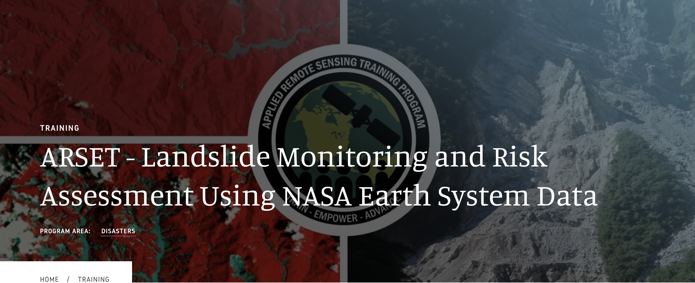
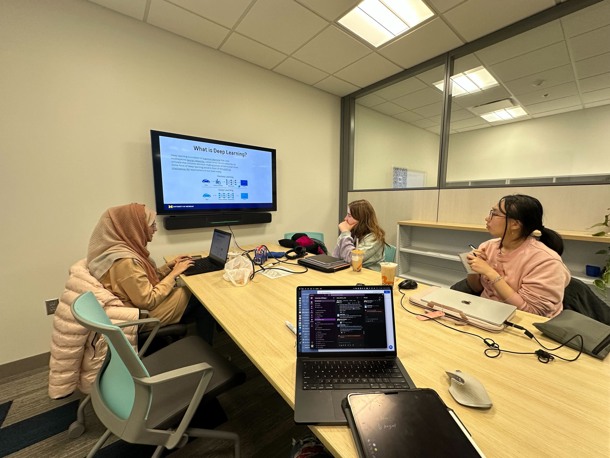
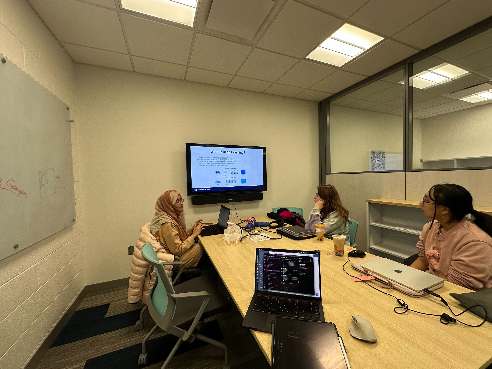

NASA Applied Remote Sensing (ARSET)
March 11, 13, 18, 2025 Learn More ConferenceA three-part introductory training that covers a number of topics related to landslides, demonstrating a wide variety of NASA Earth science data uses to characterize landslides and their impacts.
Part 1: Remote Sensing for Landslide Science and Disaster Planning
Part 2: Mapping Landslide Occurrence Using Earth Observations
Part 3: Remote Sensing and Landslide Susceptibility

Jowaria Khan's Presents on Geospatial Foundation Models
February 14, 2025 Learn More Presentation

